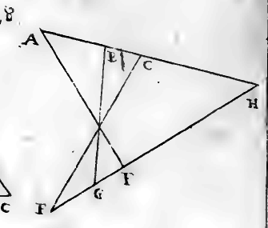

Propositio XVII · Problema X¶



PROP. XVII. PROB. X.
Exposita quarti elementi figura, ex quinque verò rationibus de quibus in eodem elemento egimus, habitis tribus quibuscunque institutum est reliquas duas inuestigare.
Habet hoc problema decem casus, veluti antecedens.
(tab. 2. fig. 18.) I. Sint datae tres rationes ED ad DC, vt 5 ad 4, GD ad DB, vt 6 ad 7, & FD ad DA, vt 1 ad 3 (in hoc tantùm primo casu non debent esse inter se parallelae duae rectae AC, EF) oportet igitur duas reliquas rationes indagare, hoc est AB ad BC, & EG ad GF. Cum igitur AC, EF parallelae non sint, productae conuenient, vt in H; itaque quia in figura ACHFED primi elementi, cognitae sunt duae rationes ED ad DC, vt 5 ad 4, AD ad DF, vt 3 ad 1; manifestabimus etiam (ex primo casu sexti problematis) duas reliquas rationes, eritque EF ad FH, vt 11 ad 16; AC verò ad AH, vt 11 ad 20. Rursus in alia figura GFHBAD eiusdem elementi habentur duae rationes AD ad DF, vt 3 ad 1; BD ad DG, vt 7 ad 6; ergo, vt supra, dabimus reliquas duas, videlicet HF ad FG, vt 28 ad 11, & HA ad AB, vt 24 ad 11.
Verùm quia CA ad AB
f. 0041 · p. 24componitur ex rationibus AC ad AH ad AB, numerorum videlicet 11 ad 20, & 24 ad 11, ex quibus componitur ratio 66 ad 55; erit CA ad AB, vt 66 ad 55, & diuidendo, CB ad BA, vt 11 ad 55, imò vt 1 ad 5.
Similiter quia EF ad FG componitur ex rationibus rectarum EF ad FH ad FG, videlicet numerorum 11 ad 16, & 28 ad 11, ex quibus fit ratio 11 ad 6 2/7, imò 77 ad 44; erit diuidendo EG ad GF, vt 33 ad 44, seu vt 3 ad 4.
II. Sit dicta figura quarti elementi quomodolibet supposita, habitisque tribus rationibus AB ad BC, vt 5 ad 1, BD ad DG, vt 7 ad 6, & EG ad GF, vt 3 ad 4, oporteat reliquas duas rationes indagare, nimirum ED ad DC, & FD ad DA. Componitur recta FD ad DA, pondus nempè A ad F, ex rationibus ponderum A ad B ad G ad F, rectarum videlicet CB ad CA, GD ad DB, & EF ad EG, imò ex rationibus 1 ad 6 ad 7 ad 3; quare FD ad DA est, vt 1 ad 3. Eadem ratione quia ED ad DC, hoc est graue C ad E componitur ex rationibus grauium C ad B ad G ad E, rectarum nempè AB ad AC, GD ad DB, & EF ad FG; imò ex rationibus 5 ad 6 ad 7 ad 4; erit ED ad DC, vt 5 ad 4.
Cognitis tribus rationibus AD ad DF, vt 3 ad 1, FG ad GE, vt 4 ad 3, & ED ad DC, vt 5 ad 4, si suspendamus grauia iuxta tres illas notas rationes, consequemur duas reliquas AB ad BC, vt 5 ad 1, & GD ad DB, vt 6 ad 7.
Idem fiet si tres rationes fuerint ED ad DC, vt 3 ad 1; CB ad BA, vt 4 ad 3, & AD ad DF, vt 5 ad 4, reperiemus enim EG ad GF, vt 5 ad 1, & BD ad GD, vt 6 ad 7.
(tab. 2. fig. 19.) V. Habeantur tres rationes FG ad GE, vt 4 ad 3, ED ad DC, vt 5 ad 4, & CB ad BA, vt 1 ad 5; debemus reperire reliquas duas BD ad DG, & FD ad DA, quod (nè obliuiscamur methodi, qua vsi sumus ab initio) sic praestabimus. Fiat vt 3 ad 4, hoc est vt recta GE ad FG, ita pondus F 3 ad pondus E 4; atque vt CD ad DE, hoc est vt 4 ad 5, ita pondus E 4 ad pondus C 5; & denique vt AB ad BC, hoc est vt 5 ad 1, ita pondus C 5 ad pondus A 1. Quoniam punctum B est centrum grauitatis grauium A 1, C 5; Itemque G centrum grauitatis ponderum E 4, F 3 erit in libra GDB centrum grauitatis omnium grauium A 1, C 5, E 4, F 3; est autem D centrum grauitatis duorum grauium E 4, C 5; ergo si possibile est vt ponamus aliquod aliud punctum h, vt centrum
f. 0042 · p. 25grauium A 1, F 3, erit in recta DH, puta in I centrum grauitatis omnium grauium, & ideo (vt priùs ostensum est) non foret in libra BDG, quia vnicum est, quod cum fieri nequeat debet idem punctum D esse centrum grauitatis omnium grauium, itemque grauium A 1, F 3, & grauium E 4, C 5; propterea vt B 6 ad G 7, ita recta GD ad DB, vtque A 1 ad F 3, ita FD ad DA.
Quod si tres cognitae rationes sint EG ad GF, vt 4 ad 3; FD ad DA, vt 5 ad 4; & AB ad BC, vt 1 ad 5, eadem ratione cognoscemus reliquas duas GB ad DB, vt 6 ad 7; & ED ad DC, vt 1 ad 3.
(tab. 1. fig. 7.) VII. Habitis tribus rationibus ED ad DC, vt 1 ad 2, AB ad BC aequalitatis, & GD ad DB, vt 1 ad 3, oporteat reliquas duas inuestigare, EG scilicet ad GF, & AD ad DF. Componitur GF ad FE, pondus scilicet E ad G, ex rationibus grauium E ad C ad B ad G, rectarum videlicet CD ad CE, AB ad AC, & GD ad DB; imò ex rationibus numerorum 2 ad 1 ad 2 ad 6, quare GF ad FE est vt 2 ad 6, conuertendo autem, indeque diuidendo, erit EG ad GF, vt 2 ad 1. Rursus quia DF ad DA, pondus videlicet A ad F componitur ex rationibus grauium A ad C ad E ad F, rectarum videlicet CB ad BA, ED ad DC, & FG ad GE; seu ex rationibus 1 ad 1 ad 2 ad 4; erit DF ad FA, vt 1 ad 4.
Alios verò tres casus eodem modo ostendemus; etenim huic septimo sunt similes. Constat igitur totum problema.
COROLLARIVM.
Quod si angulus ADC intelligatur supra angulum EDF, linea AD in lineam ED; BD in DG, & CD in DF cadet; linea verò ABC lineas ED, GD, FD secabit, ex quo fiet, vt figura elementi quarti transeat in illam tertij, & viceuersa haec in illam, si in pristinam positionem angulus ille restituatur; quare si in figura elementi quarti pro rationibus ED ad DC, FD ad DA, sumantur duae ED ad DA, & FD ad DC; inde tres quaelibet, vt diximus, datae sint rationes reliquas quoque duas notificabimus; idemque praestabimus in figura tertij elementi commutatis rationibus AE ad EF, CD ad DE in rationes AE ad ED, & CE ad EF.